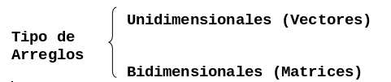
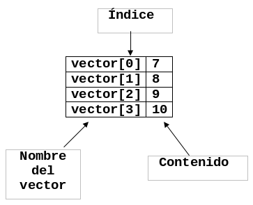
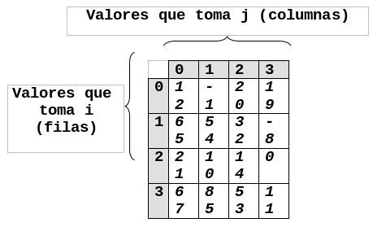

Arreglos
En este capitulo aprenderas a usar los dos tipos de arreglos mas comunes
- Unidimensionales y
- Bidimensionales
Clasificacion
Un Arreglo es una estructura de datos que almacena bajo el mismo nombre (variable) a una colección de datos del mismo tipo.
Los arreglos se caracterizan por:
- Almacenar los elementos en posiciones contiguas de memoria
- Tener un mismo nombre de variable que representa a todos los elementos.
- Para hacer referencia a esos elementos es necesario utilizar un índice que especifica el lugar que ocupa cada elemento dentro del arreglo.
La siguiente figura muestra la clasificación de los arreglos.

Vectores
Un vector es un arreglo de "N" elementos organizados en una dimensión donde "N" recibe el nombre de longitud o tamaño del vector. Para hacer referencia a un elemento del vector se usa el nombre del mismo, seguido del índice (entre corchetes), el cual indica una posición en particular del vector. La siguiente figura muestra la representación gráfica de un vector.

Podemos llenar un vector usando un ciclo hacer para como se muestra a
continuación:
Hacer para i = 1 a tamanioVector
Leer vector[i]
Fin-paraPodemos mostrar el contenido de un vector usando un ciclo hacer para como se
muestra a continuación:
Hacer para i = 1 a tamanioVector
Escribir vector[i]
Fin-paraProblemas propuestos
- Calcular el promedio de 50 valores almacenados en un vector. Determinar además cuantos son mayores que el promedio, imprimir el promedio, el número de datos mayores que el promedio y una lista de valores mayores que el promedio.
- Llenar dos vectores A y B de 45 elementos cada uno, sumar el elemento uno del vector A con el elemento uno del vector B y así sucesivamente hasta 45, almacenar el resultado en un vector C, e imprimir el vector resultante.
- Llenar un vector de 20 elementos, imprimir la posición y el valor del elemento mayor almacenado en el vector. Suponga que todos los elementos del vector son diferentes.
- Almacenar 500 números en un vector, elevar al cuadrado cada valor almacenado en el vector, almacenar el resultado en otro vector. Imprimir el vector original y el vector resultante.
- Almacenar 300 números en un vector, imprimir cuantos son ceros, cuantos son negativos, cuantos positivos. Imprimir además la suma de los negativos y la suma de los positivos.
- Almacenar 150 números en un vector, almacenarlos en otro vector en orden inverso al vector original e imprimir el vector resultante.
- Se tienen almacenados en la memoria dos vectores M y N de cien elementos cada uno. Hacer un algoritmo que escriba la palabra "Iguales" si ambos vectores son iguales y "Diferentes" si no lo son. Serán iguales cuando en la misma posición de ambos vectores se tenga el mismo valor para todos los elementos.
- Se tiene el vector A con 100 elementos almacenados. Diseñe un algoritmo que escriba "SI" si el vector está ordenado ascendentemente o "NO" si el vector no está ordenado.
- Diseñe un algoritmo que lea un numero cualquiera y lo busque en el vector X, el cual tiene almacenados 80 elementos. Escribir la posición donde se encuentra almacenado el numero en el vector o el mensaje "NO" si no lo encuentra. Búsqueda secuencial.
- Diseñe un algoritmo que lea dos vectores A y B de 20 elementos cada uno y multiplique el primer elemento de A con el ultimo elemento de B y luego el segundo elemento de A por el diecinueveavo elemento de B y así sucesivamente hasta llegar al veinteavo elemento de A por el primer elemento de B. El resultado de la multiplicación almacenarlo en un vector C.
- Diseñe un algoritmo que almacene en un vector llamado FIB[100] los 100 primeros números de la serie fibonacci.
Matrices
Es un arreglo de M x N elementos organizados en dos dimensiones donde "M" es
el numero de filas o reglones y "N" el numero de columnas.
Para representar una matriz se necesita un nombre de matriz acompañado de dos índices.
Donde i indica el renglón y j indica la columna, donde se encuentra
almacenado el dato. La siguiente figura muestra la representación gráfica de una
matriz.

Podemos llenar una matriz usando dos ciclos hacer para como se muestra a
continuación:
Hacer para i = 1 hasta numeroFilas
Hacer para j = 1 hasta numeroColumnas
Leer matriz[i][j]
Fin-para
Fin-paraPodemos mostrar el contenido de una matriz usando dos ciclos hacer para como
se muestra a continuación:
Hacer para i = 1 hasta numeroFilas
Hacer para j = 1 hasta numeroColumnas
Escribir matriz[i][j]
Fin-para
Fin-paraNota. Para hacer el llenado de una matriz se deben de usar dos variables para los índices y se utilizan 2 ciclos uno para los renglones y otro para las columnas; a estos ciclos se les llama ciclos anidados (un ciclo dentro de otro ciclo).
Problemas propuestos
- Hacer un algoritmo que almacene números en una matriz de
5 x 6. Imprimir la suma de los números almacenados en la matriz. - Hacer un algoritmo que llene una matriz de
10 x 10y determine la posición[renglón ,columna]del numero mayor almacenado en la matriz. Los números son diferentes. - Hacer un algoritmo que llene una matriz de
7 x 7. Calcular la suma de cada renglón y almacenarla en un vector, la suma de cada columna y almacenarla en otro vector. - Hacer un algoritmo que llene una matriz de
20 x 20. Sumar las columnas e imprimir que columna tuvo la máxima suma y la suma de esa columna. - Hacer un algoritmo que llene una matriz de
5 x 5y que almacene la diagonal principal en un vector. Imprimir el vector resultante. - Hacer un algoritmo que llene una matriz de
10 x 10y que almacene en la diagonal principal unos y en las demás posiciones ceros. - Hacer un algoritmo que llene una matriz de
6 x 8y que almacene toda la matriz en un vector. Imprimir el vector resultante. - Hacer un algoritmo que llene una matriz de
8 x 8, que almacene la suma de los renglones y la suma de las columnas en un vector. Imprimir el vector resultante. - Hacer un algoritmo que llene una matriz de
5 x 6y que imprima cuantos de los números almacenados son ceros, cuantos son positivos y cuantos son negativos. - Diseñe un pseudo código que escriba el numero de la hilera cuya suma sea mayor que las demás hileras. Suponga que todas las hileras suman diferente cantidad.
-
El dueño de una cadena de tiendas de artículos deportivos desea controlar sus ventas por medio de una computadora. Los datos de entrada son :
- El numero de la tienda (1 a 50)
- Un numero que indica el deporte del articulo (1 a 20)
- El costo del articulo.
Hacer un pseudo código que escriba al final del día lo siguiente:
- Las ventas totales en el día para cada tienda
- Las ventas totales para cada uno de los deportes.
- Las ventas totales de todas las tiendas.
-
El departamento de policía de la ciudad de Tuxtepec ha acumulado información referente a las infracciones de los límites de velocidad durante un determinado periodo de tiempo. El departamento ha dividido la ciudad en cuatro cuadrantes y desea realizar una estadística de las infracciones a los límites de velocidad en cada uno de ellos. Para cada infracción se ha preparado una tarjeta que contiene la siguiente información:
- Número de registro del vehículo.
- Cuadrante en el que se produjo la infracción.
- Limite de velocidad en milla por hora
Diseñe un algoritmo para producir 2 informes; el 1o. Que contiene una lista de la multa de velocidad recolectadas, donde la multa se calcula como la suma del costo de la corte ($20,000) mas $1,250 por cada mph que exceda la velocidad limite. Prepare una tabla con los siguientes resultados:
Registro del vehículo Velocidad Registrada Velocidad Límite Multa Este informe debe ser seguido de un segundo en el cual se proporcione un análisis de las infracciones por cuadrante. Para cada uno de los 4 cuadrantes mencionados, debe darse el número de infracciones y la multa promedio.
-
Se tiene almacenada la matriz
M(50, 5)la cual contiene la información sobre las calificaciones de la materia de LENGUAJES ALGORÍTMICOS . Diseñe un pseudo código que imprima:- Cantidad de alumnos que aprobaron la materia.
- Cantidad de alumnos que tienen derecho a nivelación.
- El (o los) número(s) de control de lo(s) alumno(s) que haya(n) obtenido la máxima calificación final.